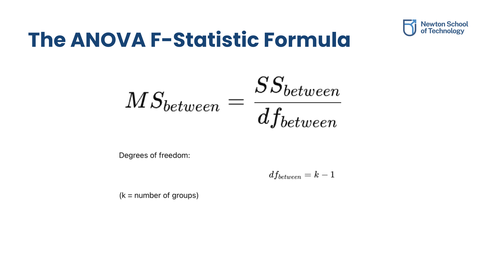
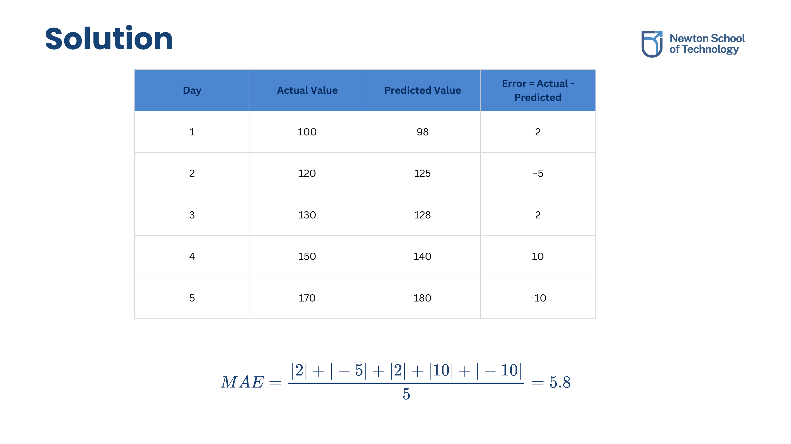
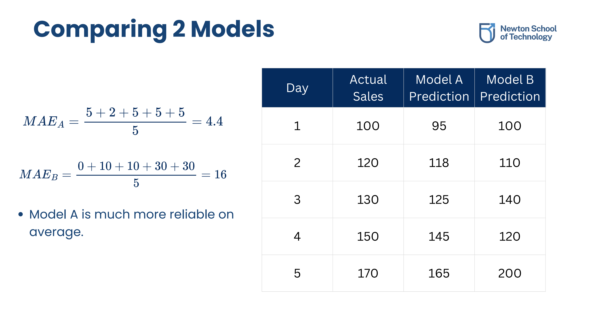
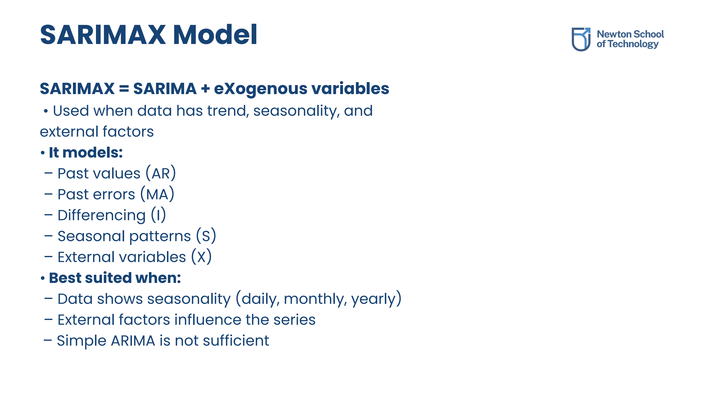
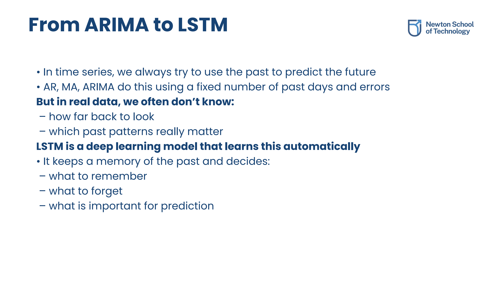

ANOVA in Time Series
1.1 What is ANOVA?
**Analysis of Variance (ANOVA)** is a statistical technique used to determine whether the difference between the means of three or more groups is statistically significant, or simply the result of random variation. In time series, it answers: "Is the observed difference in level across different time blocks larger than what random fluctuations produce?"
- Within-Group Variation: The random spread of values inside the same group (e.g., daily rating changes inside the same restaurant).
- Between-Group Variation: How much the group averages differ from each other. True differences between groups imply between-group variation is much larger.
1.2 Sum of Squares & F-Statistic
To compute variation scientifically, we calculate the sum of squared differences (SS). The ratio of between-group variation to within-group variation yields the F-statistic.

The mathematical formulas for Sum of Squares, Mean Squares, and the F-Ratio.
A higher F-statistic indicates that the variation between group means is significantly larger than the variation within the groups, making it highly probable that the groups are genuinely different.
1.3 Application to Time Series Workflows
ANOVA is adapted to time series categories to establish evidence of level shifts across different regimes:
- Detecting Seasonality: Testing if the mean level changes significantly across months (Jan vs. Feb) or days of the week (Mon vs. Fri).
- Testing Interventions: Analyzing changes before and after policy changes, marketing campaigns, or festival periods (change point detection).
- ANOVA on Residuals: Because time series data violates the independence assumption of ANOVA due to autocorrelation, the standard workflow is to fit the time-series model (e.g., ARIMA) first, extract the residuals (which should be uncorrelated white noise), and then run ANOVA on the residuals grouped by seasonal blocks.
Forecasting Evaluation Metrics
2.1 MAE, MSE, and RMSE
Evaluating model error is crucial to establish forecasting reliability. The three core metrics used to evaluate time series predictions are:
- Mean Absolute Error (MAE): Measures the average magnitude of absolute errors: MAE = (1/n) Σ |Actual - Predicted|. It is robust to outliers and matches the unit of the data.
- Mean Squared Error (MSE): Measures the average squared errors: MSE = (1/n) Σ (Actual - Predicted)2. Squaring heavily penalizes large errors, but results in squared units that are hard to interpret.
- Root Mean Squared Error (RMSE): The square root of MSE. It preserves the large-error penalty of MSE but returns the metric to the original data unit scale.
2.2 Step-by-Step MAE Calculation
Below is a step-by-step example calculating MAE for a 5-day electricity demand forecasting model:

Computing error column (Actual - Predicted) and taking the average of absolute values: (|2| + |-5| + |2| + |10| + |-10|) / 5 = 29 / 5 = 5.8.
2.3 Model Selection Strategy
When comparing different forecasting models, we evaluate their error profiles over time. Models with lower average error and stable, predictable patterns are selected over volatile models that might produce occasional zero-error points but result in catastrophic failures on other days.

Comparison: Model A behaves predictably with low average error. Model B behaves erratically with massive prediction spikes.
Advanced Forecasting Models
3.1 Seasonal ARIMA (SARIMA)
While standard ARIMA models learn trends and short-term autoregressive patterns, they cannot capture repeating cyclical seasons. **Seasonal ARIMA (SARIMA)** adds extra seasonal terms to account for repeating cycles (e.g., weekly, monthly, or yearly patterns).
Represented as: SARIMA(p, d, q) x (P, D, Q)s
Where (p, d, q) are the non-seasonal orders, (P, D, Q) are the seasonal orders, and s is the seasonal period length (e.g., s=7 for weekly cycles in daily data).
3.2 ARIMAX and SARIMAX Models
When external factors (exogenous variables, e.g., promotions, price cuts, or rainfall) influence the time series, we extend ARIMA models by including these variables as predictors:

SARIMAX incorporates past values (AR), past errors (MA), differencing (I), seasonal routines (S), and external factors (X).
3.3 Vector Autoregression (VAR)
When multiple time series variables influence each other simultaneously, we use a **Vector Autoregression (VAR)** model. In a VAR model, each variable is a linear function of its own past values and the past values of all other variables in the system, treating all variables as endogenous.
Deep Learning: From ARIMA to LSTM
4.1 Limitations of Classical Models
Classical statistical models (AR, MA, ARIMA) rely on linear combinations of a fixed number of past steps (lags) and errors. In complex real-world datasets, we often do not know how far back to look, and relationships may be highly non-linear.
4.2 The LSTM Memory Advantage
**Long Short-Term Memory (LSTM)** is a deep learning model designed specifically to automatically learn long-term temporal dependencies without requiring fixed lag specifications.

LSTM features gate mechanisms that dynamically decide what to remember, what to forget, and what to use for predictions.
Original PDF Notes
Below is the original PDF document for your reference: